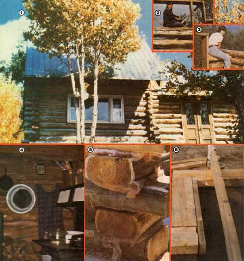
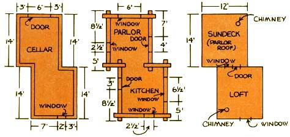
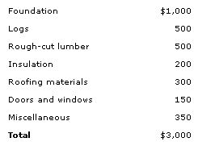

Nancy Tucker and friend ignored the snickering of skeptics, and constructed . . .
The warnings of an army of skeptical acquaintances didn't stop my friend. Cynthia Hill, and me from building a log cabin that's sturdy, economical, and-thanks to a few commonsense innovations-a cinch to construct! Despite the "prophets of doom" (who chuckled, "That's an awfully big job ... you'll never get it done by winter), we armed ourselves with determination and forged ahead.
Cyn and I understood that we knew nothing about building methods, and that we lacked any training in the skills necessary to construct a home. However, we read all the books on log cabin "technology" that we could find and-after creating a miniature model out of toothpicks-felt confident enough to have at it.
Our single biggest home-building expense was the cost of a contractor to pour a full cement basement . . . 28 feet long, 14 feet wide, and 8 feet deep. We gathered all the estimates we could and were very fortunate to find a young, aspiring builder who had constructed homes and concrete block foundations . . . but who'd never poured a basement. The "professional" felt it would be worth his while to do the work-just for the experience-at virtually no profit. So we trustingly gave him $1,000 for the cost of his materials . . . which worked out to be less than half the price all the other contractors had estimated for the job!
Of course, we could have constructed a pier foundation for almost nothing, but time was of the essence . . . and we felt that-considering the low cost of the rest of our dwelling-we could afford to have the best possible understructure.
We were also lucky to run across a local man who had a stand of giant cedars growing right in the way of a planned access road to his property. The fellow cut and stacked the logs for the even sum of $500. (We had-from the start-hoped to build with cedar . . . because it's resistant to decay, easy to peel, and comparatively light in weight.)
The cut logs sat for two months . . . long enough to dry considerably, but not enough time for them to bend. They ranged from 8 to 12 inches in diameter and were beautifully straight . . . full of knots, but straight.
Almost before we knew it, the concrete basement was completed ... the logs were hand-peeled and waiting . . . and we realized-a little breathlessly-that it was time for the "real" work to begin.
However-even after the backfilling was completed-the foundation walls protruded more than three feet above ground level.
"How are the two of us ever going to lift those big sill logs way up there?" we wondered, but Cynthia and I tucked that problem into the baths of our heads . . . while we gained proficiency with the chain saw by cutting the rough lumber for the subfloor.
The upper perimeter of the foundation was lined with 2 X 8's . . . which were held in place by a continual strip of 2 X 4's that ran along the larger planks' inside surfaces. Then the joists (again, sturdy 2 x 8's) were toenailed in at 16-inch intervals. (Once more, we could have saved money by using smaller joists and/or by placing the boards farther apart . . . but we felt it worthwhile to build the sturdiest structure we could afford.) When the deck was completed, it was time for the most difficult task of all: raising the walls.
When we designed the cabin, we had faced the fact that two women were not going to be able to muscle fifty 16-foot-long logs up onto the three-foot-high foundation. So we !d included a window or door on each wall . . . and utilized a "zigzag" shape instead of the conventional rectangle. (See the diagram accompanying this article.) Wed also decided to frame up the doors and win dows first, and build around them rather than cut out all the openings afterward.
This method would not only save timber, but would-after the first two or three "rounds" were up-guarantee that the largest log we'd have to lift would be 8-1/2 feet long.
The sill logs, of course, had to be flattened along their entire length in order to sit securely on the foundation. This was accomplished by hand-hewing . . . with the help of an axe, chain saw, and chisel. Then, somehow, we managed to push and shove the sills (the thickest and straightest logs we had) and the first two rounds onto the deck. (Contrary to the advice of many people, the sills were not bolted to the foundation . . . but there's no doubt in my mind that even the most violent of Adirondack winds and storms will not budge the structure.)
We chose a tenon notch to join the corners, using the chain saw to make the cuts and then chiseling out the pieces. Before we laid one log onto the next, we placed a square of fiberglass in the notch in order to reduce air leakage in spots where the joints didn't exactly meet. (And, believe me, it was almost impossible to make them fit perfectly!) For extra stability, the joints were nailed together with 40- or 60-penny spikes, depending on the thickness of the particular logs.
The day finally came (less than two months after we began to install the floor) when the walls were up to our planned 6-1/2foot height. The roof was next on our agenda, and we decided to build a nearly flat "cover" over the half of the cabin that would house the airtight stove. This design would make for easy chimney cleaning . . . a job which we knew would be regularly required.
We were warned about using a flat roof because of our area s heavy snow falls, yet during the first winter I only had to shovel the level "top" off once. The rafters are so close (16 inches on center) and the surface area is so small that the flat portion of our cabin's roof is capable of holding a large snow cover.
For the other half of the roof, we wanted a contrastingly steep pitch to accommodate a good-sized sleeping loft . . . and we fiddled with supports, ridge-pole heights, and knee wall until we finally hit upon an angle that pleased us. (See the sidebar for some surprising information about that "chance" angle!)
Eventually it was time for the finishing touches: the installation of doors, windows (we purchased all but one window for the price of $40 from an old, recently demolished resort hotel), and ceiling insulation . . . and-the most tedious job of all-chinking. No matter what method is employed, chinking is a monotonous (though not difficult) task. However, we came up with a system that did save us a little time and effort.
To begin with, fiberglass was stuffed loosely into the spaces between the logs, and-since we had a couple of rolls of old chicken wire on hand-we cut the metal webbing into long strips (about five or six inches wide) and pushed these into the openings . . . tacked them in place with a staple gun . . . and covered the whole assembly with a fairly dry mortar mix. The fiberglass provides valuable insulation, while the chicken wire helps to hold the decorative and draft-discouraging mortar in place.
The cabin proved to be not only low in cost and easy to build, but beautiful and cozy as well. It's heated with a small Lunge wood stove (a Scandinavian model comparable to the Jotul), and our food is prepared on an Atlanta wood cookstove, which is seldom needed for heat (although its extra warmth is welcome enough on cold winter days).
The cabin's southern exposure helps keep our rooms well lighted and cheery, and a small stand of birch trees-directly out front-provides cooling shade in the summer. (Later, when the leaves fall, the bright winter sun shines through the bare branches and warms our little woods dwelling.)
The total cost of the finished cabin came out to $3,000 . . . not bad for a permanent, naturalistic, comfortable home! This figure can be broken down as follows:
It should be kept in mind, too, that our expenses could easily be cut in half by anyone who chooses to substitute handmade stone or wood piers for the foundation, or to harvest native timbers from his/her own land.
Yet-even at the cost of $3,000-we feel we've got a much more original and inexpensive home than could be bought on the market for several times the money!
Best of all, we have the satisfaction and sense of accomplishment derived from doing all the work ourselves. Of course, we did have help off and on, since our enthusiasm spread to friends and neighbors. Folks often stopped by for a "look-see" . . . were handed a cold beer . . . and ended up pitching in to make the job easier and more enjoyable.
However, Cynthia and I were still the designers and builders, intimately acquainted with every log, notch, and nail . . . and you can't put a price on that!
During the first year of our life in the cabin, the loft created by the steep roof above the kitchen wasn't used as sleeping quarters. . . it was still unfinished, and we needed the extra storage space. Just recently, however, this area got our undivided attention. The little room was given added insulation, a fiberboard covering, and a lot of personal care in decoration.
Once the loft was completed, it became obvious to us that the "need" room was, without doubt, the warmest spot in the house . . . and the most comfortable place to sleep, even on subzero nights. What's more, we found that we were overcome by pleasant sensations and feelings of peace there. Sleep became much more restful, and we awoke each morning unusually alert, happy, and eager to face the day. This puzzled us at first, but now I think I understand:
Months ago, Cynthia-after reading an article about pyramids in MOTHER NO. 48 (page 162)-constructed a small, properly proportioned cardboard model. The miniature version sat almost forgotten in the cabin for some time, as we'd not yet determined the direction of magnetic north . . . which one side is supposed to face in order to make the structure effective.
One morning, we decided that it might be decorative and beneficial to hang the pyramid from the ridgepole. Cynthia suspended the model-by a piece of wire secured to its apex-about 18 inches down into the room.
"Wait a minute, Cyn," I said. "Take that pyramid and push it up into the angle where the ceiling halves meet."
She did, and we could both see that they fit and matched perfectly! We had, without knowing it, constructed a roof with a peak of the same angle as the pyramid. In effect, we were living in one of the supposedly healthful structures!
The cardboard model will stay in the loft where it was meant to be all along and where-on its own-one side not only finds north but aligns itself with one of the loft walls . . . which we had somehow managed to face to the north also!
Needless to say, we'll continue to spend as much time in the "mystic" room as possible . . . enjoying the restful nights and days full of vitality it seems to bring.
|
 [1] The finished cabin provides a quiet answer to the warnings of skeptical acquaintances... who had predicted that ""those women"" would never get the job done! [2] Builders Cynthia Hill... [3] and Nancy Tucker, at work [4] the interior of the log structure is rustic and cozy. [5] Fiberglass?set between the timbers at the corners?reduces air leaks where the joints don't quite meet. [6] The floor joists were toenailed in at 16"" intervals. |
 |
 |